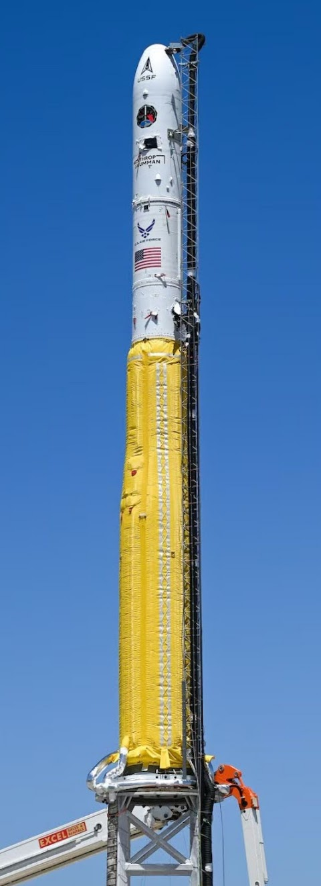

My time at:
Launch Vehicles: (June 2023 - August 2024)
For just over a year, I had the immense fortune of working as a Mechanical DI&T (Design, Integration, & Test) engineer on the Minotaur team in Arizona. The Minotaur program is run by Northrop Grumman's Launch Vehicles Division, formerly Orbital ATK, formerly formerly Orbital Sciences Corporation.
Being an initiative that originated in a smaller company, the Minotaur team is very scrappy and each member is expected to wear a lot of hats. During my tenure, the mechanical DI&T team was 10 people strong, and we were responsible for every mechanical aspect on the Minotaur vehicles for 4 unique missions, all being built concurrently. While I helped where I could with each mission, the majority of my efforts were focused on the Mk21-2 mission.
At HQ, I designed and structurally qualified all new GSE (ground support equipment) required to transfer and mate the vehicle to our brand-new Strongback transporter-erector truck. As anyone who's worked on GSE knows, there's a real freedom accessed when you're no longer beholden to the weight requirements of a launch vehicle - I reveled in this.
I know that rocket from toe to tip after having written and defended a Stress Corrosion Cracking analysis of every single part on the vehicle. While doing so, I also collected an aggregate of all Critical Attach Hardware - parts with no redundancies; if they fail, the mission fails - and verified that they met the stringent requirements for such hardware.
For just over a year, I had the immense fortune of working as a Mechanical DI&T (Design, Integration, & Test) engineer on the Minotaur team in Arizona. The Minotaur program is run by Northrop Grumman's Launch Vehicles Division, formerly Orbital ATK, formerly formerly Orbital Sciences Corporation.
Being an initiative that originated in a smaller company, the Minotaur team is very scrappy and each member is expected to wear a lot of hats. During my tenure, the mechanical DI&T team was 10 people strong, and we were responsible for every mechanical aspect on the Minotaur vehicles for 4 unique missions, all being built concurrently. While I helped where I could with each mission, the majority of my efforts were focused on the Mk21-2 mission.
At HQ, I designed and structurally qualified all new GSE (ground support equipment) required to transfer and mate the vehicle to our brand-new Strongback transporter-erector truck. As anyone who's worked on GSE knows, there's a real freedom accessed when you're no longer beholden to the weight requirements of a launch vehicle - I reveled in this.
I know that rocket from toe to tip after having written and defended a Stress Corrosion Cracking analysis of every single part on the vehicle. While doing so, I also collected an aggregate of all Critical Attach Hardware - parts with no redundancies; if they fail, the mission fails - and verified that they met the stringent requirements for such hardware.
 The Mk21-2 Vehicle (Minotaur I)
Two didn't, and it was up to me to qualify their acceptability for flight, just over a month before the launch. A few structural proofs and a vibe test later, the hardware was compliant. This is how I learned that baked goods can move mountains when you need something manufactured on short notice! And how much older organizations rely on legacy hardware, regardless of its compliance to new standards.
I also worked with the Thermal team on retrofitting their analysis software to be able to simulate payload contamination to ensure we met our customer's cleanliness requirements. No one liked my idea of jettisoning the fairing in-atmo to burn any contaminants off of the spacecraft.
In the field, I was the Test Coordinator (engineering lead) for a multitude of integration operations, including two Hazardous ops: fairing encapsulation and the installation of the aft handling ring, a massive piece of steel GSE used for upper stack transfer to the launch pad.
I also had the distinct pleasure of being a part of payload integration and launch pad setup. I headed the installation of the four lightningrods present at the launch pad, and helped with a littany of pad ops. Highlights include upper stack breakover and emplacement, daily Remove-Before-Flight walkdowns, and wrapping the rocket with its "banana" cover (which we did with synchronized heaving of six ropes up the scaffolding. The motivational sea shanties were Irene's idea).
Though I'm no longer a member of the Minotaur team, I'm a much more competent and confident engineer because of my time on it. You'd be hard-pressed to find a better group of people anywhere in the industry, and I'll always cherish the memories of O'Cairn's, swamp coolers, launch monkeys, and all the moments in-between.
Airborne Multifunction Sensors: (May 2022 - June 2023)
My first job after graduating from college was also my first rotation in the Northrop Grumman Pathways Program. My official title was Electromechanical Engineer, which essentially meant I was a lone Mechanical Engineer in a sea of Electricals. What a learning opportunity!
Up until this point, electrical engineering was adjacent to witchcraft in my mind, so naturally I was sticking my fingers into as many pies as possible in an effort to demystify all things circuitry.
Though I contributed wherever the opportunity presented itself, the thrust of my work was broadly spread across three programs: MESA (Multi-Role Electronically Scanned Array), Beowulf, and one that was so need-to-know that I only had a codename to refer to it by, and I'm reticent to share it here.
I spent my year in Baltimore designing and constructing test beds for these sensor arrays and respinning a digital signal processor whose components had been retired commercially so they needed to be replaced. Much of my mechanical work was to mitigate EMI (electromagnetic interference) and distribute heat for power electronics to operate properly.
Over the course of this rotation, I spent more than 2000 hours working in Seimens NX. I had dreams about cable splines.
My proudest moment was when we had a MESA array come back Korea where it was being used, as the customer was experiencing a leak of the Ethylene-Glycol Water coolant that gets piped through it. Shortly before the product was sent to a comprehensive (read: bloated) SME panel for a review, I diagnosed the problem and tracked down a COTS replacement part to get on order. This swift find and fix potentially saved the program tens of thousands of dollars in damage assessment and correction.
I gained skills and learned a lot of the nuances found in the union between mechanical and electrical requirements: the delicacy of fiber-optics, the world of conductive coatings, oscilloscope and power supply operation, and NX Xpedition; just to name a few. Though I know I only scratched the surface, June 2023 rolled around and it was time for me to drive cross-country and begin a whole new experience.
My first job after graduating from college was also my first rotation in the Northrop Grumman Pathways Program. My official title was Electromechanical Engineer, which essentially meant I was a lone Mechanical Engineer in a sea of Electricals. What a learning opportunity!
Up until this point, electrical engineering was adjacent to witchcraft in my mind, so naturally I was sticking my fingers into as many pies as possible in an effort to demystify all things circuitry.
Though I contributed wherever the opportunity presented itself, the thrust of my work was broadly spread across three programs: MESA (Multi-Role Electronically Scanned Array), Beowulf, and one that was so need-to-know that I only had a codename to refer to it by, and I'm reticent to share it here.
I spent my year in Baltimore designing and constructing test beds for these sensor arrays and respinning a digital signal processor whose components had been retired commercially so they needed to be replaced. Much of my mechanical work was to mitigate EMI (electromagnetic interference) and distribute heat for power electronics to operate properly.
Over the course of this rotation, I spent more than 2000 hours working in Seimens NX. I had dreams about cable splines.
My proudest moment was when we had a MESA array come back Korea where it was being used, as the customer was experiencing a leak of the Ethylene-Glycol Water coolant that gets piped through it. Shortly before the product was sent to a comprehensive (read: bloated) SME panel for a review, I diagnosed the problem and tracked down a COTS replacement part to get on order. This swift find and fix potentially saved the program tens of thousands of dollars in damage assessment and correction.
I gained skills and learned a lot of the nuances found in the union between mechanical and electrical requirements: the delicacy of fiber-optics, the world of conductive coatings, oscilloscope and power supply operation, and NX Xpedition; just to name a few. Though I know I only scratched the surface, June 2023 rolled around and it was time for me to drive cross-country and begin a whole new experience.